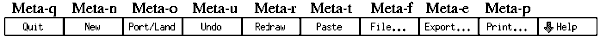
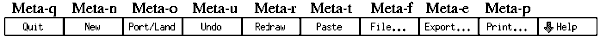

- コマンド・パネルに対応するアクセラレータ:
- 
- 描画、及び編集モード・ボタンに対応するアクセラレータ:
![[Drawing / Editing Accelerators]](../images/drawedit-accel.gif)

[ English Version | Japanese Version ]
[ Contents
| Operating Manual
| New Features and Bugs Fixed
| Technical Informations
| Authors ]
[ 概要
| コマンド・パネル
| 描画モード・パネル
| 編集モード・パネル
| インジケータ・パネル
| その他のパネル
| キーボード・アクセラレータ ]
- コマンド・パネルに対応するアクセラレータ:
- 
- 描画、及び編集モード・ボタンに対応するアクセラレータ:
ポップアップ・パネル上でも キーボード・アクセラレータが使用できる場合がありますが、 それについては個々のポップアップ・パネルの説明を参照して下さい。